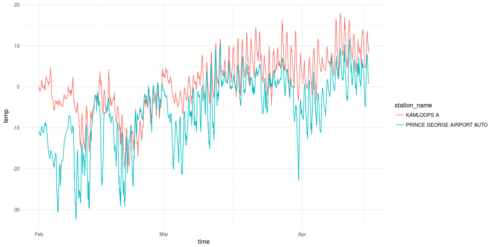

This package makes it easier to search for and download multiple months/years of historical weather data from Environment and Climate Change Canada (ECCC) website.
Bear in mind that these downloads can be fairly large and performing multiple downloads may use up ECCC’s bandwidth unnecessarily. Try to stick to what you need.
For more details and tutorials checkout the weathercan website
Installation
You can install weathercan directly from CRAN:
install.packages("weathercan")
Use the devtools package to install the developmental package from GitHub:
install.packages("devtools") # If not already installed devtools::install_github("ropensci/weathercan")
To build the developmental vignettes (tutorials) locally, use:
devtools::install_github("ropensci/weathercan", build_vignettes = TRUE)
View the available vignettes with vignette(package = "weathercan")
View a particular vignette with, for example, vignette("weathercan", package = "weathercan")
General usage
To download data, you first need to know the station_id associated with the station you’re interested in.
Stations
weathercan includes a data frame called stations which includes a list of stations and their details (including station_id.
head(stations)
## # A tibble: 6 x 14
## prov station_name station_id climate_id WMO_id TC_id lat lon elev tz interval start end
## <chr> <chr> <dbl> <chr> <dbl> <chr> <dbl> <dbl> <dbl> <chr> <chr> <dbl> <dbl>
## 1 AB DAYSLAND 1795 301AR54 NA <NA> 52.9 -112. 689. Etc/… day 1908 1922
## 2 AB DAYSLAND 1795 301AR54 NA <NA> 52.9 -112. 689. Etc/… hour NA NA
## 3 AB DAYSLAND 1795 301AR54 NA <NA> 52.9 -112. 689. Etc/… month 1908 1922
## 4 AB EDMONTON CO… 1796 301BK03 NA <NA> 53.6 -114. 671. Etc/… day 1978 1979
## 5 AB EDMONTON CO… 1796 301BK03 NA <NA> 53.6 -114. 671. Etc/… hour NA NA
## 6 AB EDMONTON CO… 1796 301BK03 NA <NA> 53.6 -114. 671. Etc/… month 1978 1979
## # … with 1 more variable: normals <lgl>glimpse(stations)
## Rows: 26,316
## Columns: 14
## $ prov <chr> "AB", "AB", "AB", "AB", "AB", "AB", "AB", "AB", "AB", "AB", "AB", "AB", "AB"…
## $ station_name <chr> "DAYSLAND", "DAYSLAND", "DAYSLAND", "EDMONTON CORONATION", "EDMONTON CORONAT…
## $ station_id <dbl> 1795, 1795, 1795, 1796, 1796, 1796, 1797, 1797, 1797, 1798, 1798, 1798, 1799…
## $ climate_id <chr> "301AR54", "301AR54", "301AR54", "301BK03", "301BK03", "301BK03", "301B6L0",…
## $ WMO_id <dbl> NA, NA, NA, NA, NA, NA, NA, NA, NA, NA, NA, NA, NA, NA, NA, NA, NA, NA, NA, …
## $ TC_id <chr> NA, NA, NA, NA, NA, NA, NA, NA, NA, NA, NA, NA, NA, NA, NA, NA, NA, NA, NA, …
## $ lat <dbl> 52.87, 52.87, 52.87, 53.57, 53.57, 53.57, 52.15, 52.15, 52.15, 53.20, 53.20,…
## $ lon <dbl> -112.28, -112.28, -112.28, -113.57, -113.57, -113.57, -111.73, -111.73, -111…
## $ elev <dbl> 688.8, 688.8, 688.8, 670.6, 670.6, 670.6, 838.2, 838.2, 838.2, 640.0, 640.0,…
## $ tz <chr> "Etc/GMT+7", "Etc/GMT+7", "Etc/GMT+7", "Etc/GMT+7", "Etc/GMT+7", "Etc/GMT+7"…
## $ interval <chr> "day", "hour", "month", "day", "hour", "month", "day", "hour", "month", "day…
## $ start <dbl> 1908, NA, 1908, 1978, NA, 1978, 1987, NA, 1987, 1987, NA, 1987, 1980, NA, 19…
## $ end <dbl> 1922, NA, 1922, 1979, NA, 1979, 1990, NA, 1990, 1998, NA, 1998, 2009, NA, 20…
## $ normals <lgl> FALSE, FALSE, FALSE, FALSE, FALSE, FALSE, FALSE, FALSE, FALSE, FALSE, FALSE,…You can look through this data frame directly, or you can use the stations_search function:
stations_search("Kamloops", interval = "hour")
## # A tibble: 3 x 14
## prov station_name station_id climate_id WMO_id TC_id lat lon elev tz interval start end
## <chr> <chr> <dbl> <chr> <dbl> <chr> <dbl> <dbl> <dbl> <chr> <chr> <dbl> <dbl>
## 1 BC KAMLOOPS A 1275 1163780 71887 YKA 50.7 -120. 345. Etc/… hour 1953 2013
## 2 BC KAMLOOPS A 51423 1163781 71887 YKA 50.7 -120. 345. Etc/… hour 2013 2021
## 3 BC KAMLOOPS AUT 42203 1163842 71741 ZKA 50.7 -120. 345 Etc/… hour 2006 2021
## # … with 1 more variable: normals <lgl>Time frame must be one of “hour”, “day”, or “month”.
You can also search by proximity:
stations_search(coords = c(50.667492, -120.329049), dist = 20, interval = "hour")
## # A tibble: 3 x 15
## prov station_name station_id climate_id WMO_id TC_id lat lon elev tz interval start end
## <chr> <chr> <dbl> <chr> <dbl> <chr> <dbl> <dbl> <dbl> <chr> <chr> <dbl> <dbl>
## 1 BC KAMLOOPS A 1275 1163780 71887 YKA 50.7 -120. 345. Etc/… hour 1953 2013
## 2 BC KAMLOOPS AUT 42203 1163842 71741 ZKA 50.7 -120. 345 Etc/… hour 2006 2021
## 3 BC KAMLOOPS A 51423 1163781 71887 YKA 50.7 -120. 345. Etc/… hour 2013 2021
## # … with 2 more variables: normals <lgl>, distance <dbl>Weather
Once you have your station_id(s) you can download weather data:
kam <- weather_dl(station_ids = 51423, start = "2018-02-01", end = "2018-04-15")
## As of weathercan v0.3.0 time display is either local time or UTC
## See Details under ?weather_dl for more information.
## This message is shown once per session
kam## # A tibble: 1,776 x 37
## station_name station_id station_operator prov lat lon elev climate_id WMO_id TC_id
## <chr> <dbl> <lgl> <chr> <dbl> <dbl> <dbl> <chr> <chr> <chr>
## 1 KAMLOOPS A 51423 NA BC 50.7 -120. 345. 1163781 71887 YKA
## 2 KAMLOOPS A 51423 NA BC 50.7 -120. 345. 1163781 71887 YKA
## 3 KAMLOOPS A 51423 NA BC 50.7 -120. 345. 1163781 71887 YKA
## 4 KAMLOOPS A 51423 NA BC 50.7 -120. 345. 1163781 71887 YKA
## 5 KAMLOOPS A 51423 NA BC 50.7 -120. 345. 1163781 71887 YKA
## 6 KAMLOOPS A 51423 NA BC 50.7 -120. 345. 1163781 71887 YKA
## 7 KAMLOOPS A 51423 NA BC 50.7 -120. 345. 1163781 71887 YKA
## 8 KAMLOOPS A 51423 NA BC 50.7 -120. 345. 1163781 71887 YKA
## 9 KAMLOOPS A 51423 NA BC 50.7 -120. 345. 1163781 71887 YKA
## 10 KAMLOOPS A 51423 NA BC 50.7 -120. 345. 1163781 71887 YKA
## # … with 1,766 more rows, and 27 more variablesYou can also download data from multiple stations at once:
kam_pg <- weather_dl(station_ids = c(48248, 51423), start = "2018-02-01", end = "2018-04-15")
And plot it:
library(ggplot2) ggplot(data = kam_pg, aes(x = time, y = temp, group = station_name, colour = station_name)) + theme_minimal() + geom_line()

Climate Normals
To access climate normals, you first need to know the climate_id associated with the station you’re interested in.
stations_search("Winnipeg", normals_only = TRUE)
## # A tibble: 1 x 11
## prov station_name station_id climate_id WMO_id TC_id lat lon elev tz normals
## <chr> <chr> <dbl> <chr> <dbl> <chr> <dbl> <dbl> <dbl> <chr> <lgl>
## 1 MB WINNIPEG RICHARDSON IN… 3698 5023222 71852 YWG 49.9 -97.2 239. Etc/GM… TRUEThen you can download the climate normals with the normals_dl() function.
n <- normals_dl("5023222")
There are two parts to the normals data, average weather measurements and average frost dates.
## # A tibble: 13 x 202
## prov station_name climate_id meets_wmo period temp_daily_aver… temp_daily_aver… temp_sd
## <chr> <chr> <chr> <lgl> <fct> <dbl> <chr> <dbl>
## 1 MB WINNIPEG RI… 5023222 TRUE Jan -16.4 A 4.1
## 2 MB WINNIPEG RI… 5023222 TRUE Feb -13.2 A 4.2
## 3 MB WINNIPEG RI… 5023222 TRUE Mar -5.8 A 3.1
## 4 MB WINNIPEG RI… 5023222 TRUE Apr 4.4 A 2.7
## 5 MB WINNIPEG RI… 5023222 TRUE May 11.6 A 2.1
## 6 MB WINNIPEG RI… 5023222 TRUE Jun 17 A 2
## 7 MB WINNIPEG RI… 5023222 TRUE Jul 19.7 A 1.4
## 8 MB WINNIPEG RI… 5023222 TRUE Aug 18.8 A 1.9
## 9 MB WINNIPEG RI… 5023222 TRUE Sep 12.7 A 1.3
## 10 MB WINNIPEG RI… 5023222 TRUE Oct 5 A 1.8
## 11 MB WINNIPEG RI… 5023222 TRUE Nov -4.9 A 3.6
## 12 MB WINNIPEG RI… 5023222 TRUE Dec -13.2 A 4.4
## 13 MB WINNIPEG RI… 5023222 TRUE Year 3 A 1.2
## # … with 194 more variables: temp_sd_code <chr>, temp_daily_max <dbl>, temp_daily_max_code <chr>,
## # temp_daily_min <dbl>, temp_daily_min_code <chr>, temp_extreme_max <dbl>,
## # temp_extreme_max_code <chr>, temp_extreme_max_date <date>, temp_extreme_max_date_code <chr>,
## # temp_extreme_min <dbl>, temp_extreme_min_code <chr>, temp_extreme_min_date <date>,
## # temp_extreme_min_date_code <chr>, rain <dbl>, rain_code <chr>, snow <dbl>, snow_code <chr>,
## # precip <dbl>, precip_code <chr>, snow_mean_depth <dbl>, snow_mean_depth_code <chr>,
## # snow_median_depth <dbl>, snow_median_depth_code <chr>, snow_depth_month_end <dbl>,
## # snow_depth_month_end_code <chr>, rain_extreme_daily <dbl>, rain_extreme_daily_code <chr>,
## # rain_extreme_daily_date <date>, rain_extreme_daily_date_code <chr>, snow_extreme_daily <dbl>,
## # snow_extreme_daily_code <chr>, snow_extreme_daily_date <date>,
## # snow_extreme_daily_date_code <chr>, precip_extreme_daily <dbl>,
## # precip_extreme_daily_code <chr>, precip_extreme_daily_date <date>,
## # precip_extreme_daily_date_code <chr>, snow_extreme_depth <dbl>, snow_extreme_depth_code <chr>,
## # snow_extreme_depth_date <date>, snow_extreme_depth_date_code <chr>, `temp_max_days_<=0` <dbl>,
## # `temp_max_days_<=0_code` <chr>, `temp_max_days_>0` <dbl>, `temp_max_days_>0_code` <chr>,
## # `temp_max_days_>10` <dbl>, `temp_max_days_>10_code` <chr>, `temp_max_days_>20` <dbl>,
## # `temp_max_days_>20_code` <chr>, `temp_max_days_>30` <dbl>, `temp_max_days_>30_code` <chr>,
## # `temp_max_days_>35` <dbl>, `temp_max_days_>35_code` <chr>, `temp_min_days_>0` <dbl>,
## # `temp_min_days_>0_code` <chr>, `temp_min_days_<=2` <dbl>, `temp_min_days_<=2_code` <chr>,
## # `temp_min_days_<=0` <dbl>, `temp_min_days_<=0_code` <chr>, `temp_min_days_<-2` <dbl>,
## # `temp_min_days_<-2_code` <chr>, `temp_min_days_<-10` <dbl>, `temp_min_days_<-10_code` <chr>,
## # `temp_min_days_<-20` <dbl>, `temp_min_days_<-20_code` <chr>, `temp_min_days_<-30` <dbl>,
## # `temp_min_days_<-30_code` <chr>, `rain_days_>=0.2` <dbl>, `rain_days_>=0.2_code` <chr>,
## # `rain_days_>=5` <dbl>, `rain_days_>=5_code` <chr>, `rain_days_>=10` <dbl>,
## # `rain_days_>=10_code` <chr>, `rain_days_>=25` <dbl>, `rain_days_>=25_code` <chr>,
## # `snow_days_>=0.2` <dbl>, `snow_days_>=0.2_code` <chr>, `snow_days_>=5` <dbl>,
## # `snow_days_>=5_code` <chr>, `snow_days_>=10` <dbl>, `snow_days_>=10_code` <chr>,
## # `snow_days_>=25` <dbl>, `snow_days_>=25_code` <chr>, `precip_days_>=0.2` <dbl>,
## # `precip_days_>=0.2_code` <chr>, `precip_days_>=5` <dbl>, `precip_days_>=5_code` <chr>,
## # `precip_days_>=10` <dbl>, `precip_days_>=10_code` <chr>, `precip_days_>=25` <dbl>,
## # `precip_days_>=25_code` <chr>, `snow_depth_days_>=1` <dbl>, `snow_depth_days_>=1_code` <chr>,
## # `snow_depth_days_>=5` <dbl>, `snow_depth_days_>=5_code` <chr>, `snow_depth_days_>=10` <dbl>,
## # `snow_depth_days_>=10_code` <chr>, `snow_depth_days_>=20` <dbl>,
## # `snow_depth_days_>=20_code` <chr>, wind_speed <dbl>, …unnest(n, frost)
## # A tibble: 7 x 13
## prov station_name climate_id meets_wmo normals frost_code date_first_fall… date_last_sprin…
## <chr> <chr> <chr> <lgl> <list> <chr> <dbl> <dbl>
## 1 MB WINNIPEG RI… 5023222 TRUE <tibbl… A 265 143
## 2 MB WINNIPEG RI… 5023222 TRUE <tibbl… A 265 143
## 3 MB WINNIPEG RI… 5023222 TRUE <tibbl… A 265 143
## 4 MB WINNIPEG RI… 5023222 TRUE <tibbl… A 265 143
## 5 MB WINNIPEG RI… 5023222 TRUE <tibbl… A 265 143
## 6 MB WINNIPEG RI… 5023222 TRUE <tibbl… A 265 143
## 7 MB WINNIPEG RI… 5023222 TRUE <tibbl… A 265 143
## # … with 5 more variables: length_frost_free <dbl>, prob <chr>,
## # prob_first_fall_temp_below_0_on_date <dbl>, prob_length_frost_free <dbl>,
## # prob_last_spring_temp_below_0_on_date <dbl>Citation
citation("weathercan")
##
## To cite 'weathercan' in publications, please use:
##
## LaZerte, Stefanie E and Sam Albers (2018). weathercan: Download and format weather data
## from Environment and Climate Change Canada. The Journal of Open Source Software
## 3(22):571. doi:10.21105/joss.00571.
##
## A BibTeX entry for LaTeX users is
##
## @Article{,
## title = {{weathercan}: {D}ownload and format weather data from Environment and Climate Change Canada},
## author = {Stefanie E LaZerte and Sam Albers},
## journal = {The Journal of Open Source Software},
## volume = {3},
## number = {22},
## pages = {571},
## year = {2018},
## url = {https://joss.theoj.org/papers/10.21105/joss.00571},
## }License
The data and the code in this repository are licensed under multiple licences. All code is licensed GPL-3. All weather data is licensed under the (Open Government License - Canada).
Similar packages
1) rclimateca
weathercan and rclimateca were developed at roughly the same time and as a result, both present up-to-date methods for accessing and downloading data from ECCC. The largest differences between the two packages are: a) weathercan includes functions for interpolating weather data and directly integrating it into other data sources. b) weathercan actively seeks to apply tidy data principles in R and integrates well with the tidyverse including using tibbles and nested listcols. c) rclimateca contains arguments for specifying short vs. long data formats. d) rclimateca has the option of formatting data in the MUData format using the mudata2 package by the same author.
2) CHCN
CHCN is an older package last updated in 2012. Unfortunately, ECCC updated their services within the last couple of years which caused a great many of the previous web scrapers to fail. CHCN relies on one of these older web-scrapers and so is currently broken.
Contributions
We welcome any and all contributions! To make the process as painless as possible for all involved, please see our guide to contributing
Code of Conduct
Please note that this project is released with a Contributor Code of Conduct. By participating in this project you agree to abide by its terms.